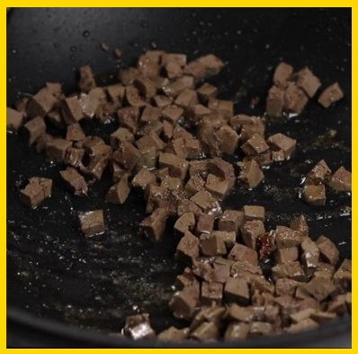

Fried Rice
my favourite meal is always fried rice, it has this unique taste that makes it so special, and it does take some time to make which makes it worth it.

click here if you wanna watch how to make it
Ingredients
- 2000g 2kg whole chicken, cut up
- Handful of onion
- 3 garlic cloves
- 2 teaspoons thyme
- 1 tablespoon curry powder
- 2 teaspoons salt
- 4 crushed chicken bouillon cubes 2 knorr cubes
- 1 cup water
- For the rice
- 4 cups rice
- Chicken broth reserved from boiling the chicken
- half teaspoon salt
- half to 1 teaspoon curry powder
- half bell pepper
- Oil for frying the chicken or oil spray for air frying
- 1 large carrot diced
- half green bell pepper diced
- 6 – 8 green beans
- 3 bunches of green onions
- half cup peas
- ¼ cup sweet corn
- half teaspoon chicken seasoning
- ¼ teaspoon salt
- 1 teaspoon white pepper
- ½ lb shrimp
- Pinch of salt
- ¼ teaspoon chicken seasoning
- ½ teaspoon onion powder
- 1 tablespoon oil for frying
- ½ lb beef liver
- ½ teaspoon salt
- 1 chicken seasoning cubes
- 1 cup of water
Method of preparation
- Step 1: Season and cook chicken or beef, then separate the chicken from the broth.
- Step 2: Cook the washed rice in the meat broth.
- Step 3: Prepare and dice the vegetables, and thaw the frozen vegetables if you are using them.
- Step 4: Clean, peel, devein, season, and cook the shrimp.
- Step 5: Boil the beef liver, dice it, and fry it.

- Step 6: Season and stir-fry the vegetables.
- Step 7: Add the rice, cooked shrimp, liver, and green onions.
- Step 8: Stir-fry the rice for 5 minutes.
- Step 9: Serve and enjoy!